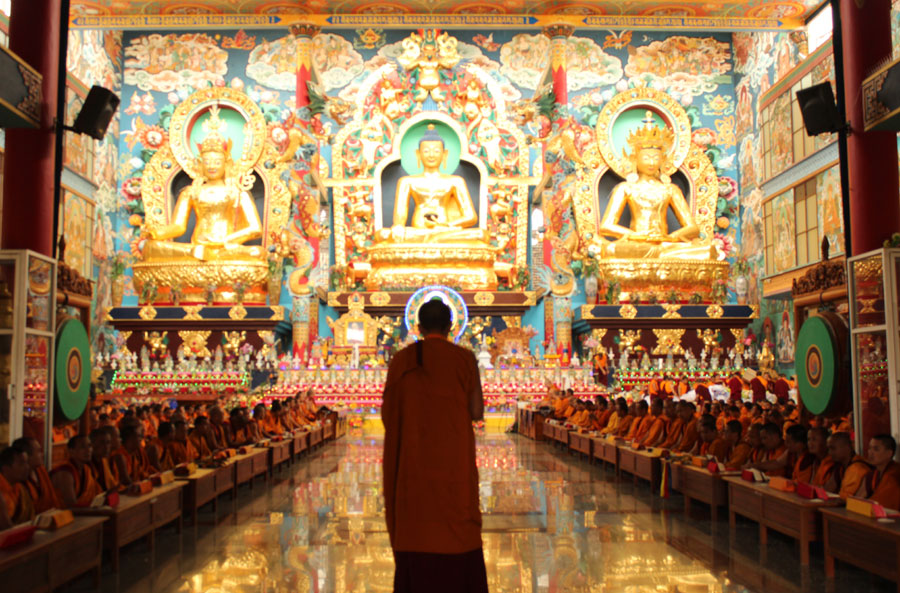
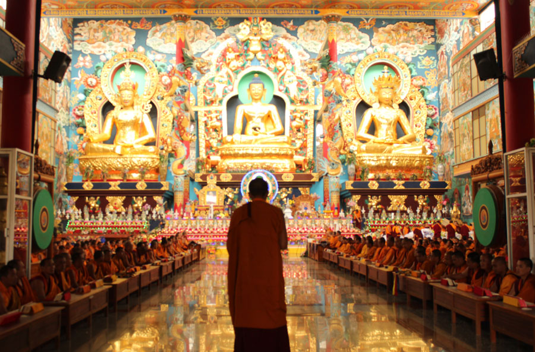

༧ སྐྱབས་རྗེ་གྲུབ་དབང་པདྨ་ནོར་བུ་རིན་པོ་ཆེའི་མཛད་རྣམ།
དེ་ཡང་རྫོགས་ཆེན་སྐུ་ཕྲེང་ལྔ་པ་ཐུབ་བསྟན་ཆོས་ཀྱི་རྡོ་རྗེའི་ལུང་བསྟན་ལས། གནས་མཆོག་སྤོ་བོ་སྟོད་ཀྱི་ཕྱོགས་ཤིག་ན།། རིན་ཆེན་བྲག་རི་ལྷུན་སྟུག་མཛེས་པའི་རྩར།། ལྗོན་ཤིང་སྣ་ཚོགས་མཚོ་དང་ལྡེང་ཀས་བརྒྱན།། བསིལ་ལྡན་ཆུ་བོ་ཆེན་པོ་ལྷོ་ནས་འདྲེན།། ཐབས་ཤེས་བསོད་ནམས་སྐྱིད་ཀྱི་མིང་ཅན་ལ།། རིགས་ལྡན་ཁྱེའུ་ཆུ་སྤྲེལ་ལོ་པ་འབྱུང་།། བསྟན་འགྲོར་སྨན་པའི་དགེ་མཚན་བཟང་པོ་ཤར།། ཞེས་གསུངས་པ་ལྟར་རབ་བྱུང་ ༡༦ ཆུ་སྤྲེལ་ ༡༩༣༢ ལོའི་རྒྱལ་ཟླ་བར་ཁམས་ཕྱོགས་སྤོ་བོའི་ཡུལ་དུ་ཡབ་བསོད་ནམས་འགྱུར་མེད་དང་། ཡུམ་འཛོམས་སྐྱིད་གཉིས་ཀྱི་སྲས་སུ་མཚན་དཔེའི་པདྨོ་གསར་དུ་བཞད། གོང་གི་ལུང་དོན་བཞིན་མཁན་ཆེན་ངག་གི་དབང་པོས་གྲུབ་དབང་སྐུ་ཕྲེང་གཉིས་པ་རིག་འཛིན་དཔལ་ཆེན་འདུས་པའི་ཡང་སྲིད་དེ་མ་ཐག་པར་ངོས་འཛིན་མཛད། དགུང་གྲངས་ལྔ་པ་ ༡༩༣༦ ལོར་དཔལ་ཡུལ་རྣམ་རྒྱལ་བྱང་ཆུབ་ཆོས་གླིང་དུ་གདན་དྲངས། མཁན་ཆེན་ངག་གི་དབང་པོ་ལ་གཙུག་ཕུད་ཕུལ་ཞིང་འཇམ་དཔལ་ཡེ་ཤེས་སེམས་དཔའི་སྨིན་བྱེད་ཟབ་མོ་ཐོག་མའི་ཆོས་སུ་ཐོབ། ༡༩༤༣ ལོར་མཆོག་སྤྲུལ་ཐུབ་བསྟན་ཆོས་ཀྱི་ཟླ་བ་ལས་སྐྱབས་གསུམ་འཛིན་པའི་དགེ་བསྙེན་གྱི་སྡོམ་པ་མནོས། དགོན་སྡེ་ཉི་ཤུའི་བསྟན་བདག་དང་ཡུལ་ཁག་དུ་མའི་མི་དྲག དེ་བཞིན་དད་ལྡན་ཁྲི་ཕྲག་བརྒལ་བའི་དབུས་སུ་མི་འཇིགས་གསེར་གྱི་ཁྲི་འཕང་མཐོན་པོར་མངའ་གསོལ་ཞིང་ཁྲི་སྟོན་རྒྱ་ཆེར་མཛད། རིན་ཆེན་གཏེར་མཛོད་ཆེན་མོ། གནམ་ཆོས། རཏྣའི་ཟབ་ཆོས། ཀར་གླིང་ཞི་ཁྲོ་སོགས་ཀྱི་དབང་གསན། ༡༩༤༤ ལོར་བརྡ་གོ་རི་ཁྲོད་དུ་མཁན་པོ་མཆོག་སྤྲུལ་ཆོས་ཀྱི་ཟླ་བ་ལས་ཚིགས་སྔ་མ་དགེ་ཚུལ་གྱི་སྡོམ་པ་བཞེས། ༡༩༤༥ ལོར་མགོ་ལོག་དཔལ་ཡུལ་དར་ཐང་དགོན་དུ་༸སྐྱབས་མགོན་མཆོག་སྤྲུལ་ཐུབ་བསྟན་ཆོས་ཀྱི་ཟླ་བའི་ཞལ་སྔ་ནས་གནམ་ཆོས་སྔོན་འགྲོ་དང། གཏུམ་མོ་བདེ་དྲོད་རང་འབར། རྫོགས་ཆེན་སངས་རྒྱས་ལག་འཆང་། ཐུགས་ཆེན་དམར་ཁྲིད་སོགས་གྲུབ་དབང་གོང་མ་ལས་བརྒྱུད་པའི་སྨིན་ཁྲིད་ཡོངས་རྫོགས་དང། ཧོར་ཤུལ་མཁན་པོ་ལས་རྒྱལ་བའི་བཀའ་འགྱུར་ཆེན་མོའི་ལུང་དང། བསྟན་འགྱུར་ལུང་རྒྱུན་བཞུགས་སོ་ཅོག་དང། མཁན་ཆེན་ངག་གི་དབང་པོའི་གསུང་ཕལ་ཆེ་བ་གསན་ཅིང་དར་ཐང་དགོན་དུ་ལོ་གསུམ་བཞུགས། ༡༩༤༩ ལོར་གདན་སར་ཕེབས་ཏེ་ལོ་གཅིག་རིང་བསྙེན་སྒྲུབ་ཀྱི་སྐུ་མཚམས་བཞུགས། མཁན་ཆེན་མཁྱེན་བརྩེ་བློ་གྲོས་ལས་མདོ་འགྲེལ་གཟི་ལྡན་འཆང་ཁའི་འོད་སྣང། མདོ་འགྲེལ་མུན་པའི་གོ་ཆ། དམ་པའི་ཁོག་དབུབ། གཙང་སྟོན་ཕྱག་མཚན། ཡོན་ཏན་མཛོད་རྩ་འགྲེལ། དབུ་མ་རྒྱན་གྱི་རྣམ་བཤད། ངེས་ཤེས་སྒྲོན་མེ་སོགས་དང། ཀཿཐོག་མཁན་པོ་ལེགས་བཤད་འབྱོར་ལྡན་ལས་མདོ་དབང་སྦྲང་རྩིའི་ཆུ་རྒྱུན། མདོ་དབང་རྡོ་རྗེའི་ཐེམ་སྐས་སོགས་དང། ལུང་སྤྲུལ་བསྟན་པའི་ཉི་མ་ལས་སྙིང་ཐིག་རྩ་པོད་སོགས་དང། མཁན་པོ་པདྨ་འཇིགས་མེད་ལས་མཁྱེན་བརྩེའི་པོད་དགུ། ཆགས་མེད་ཨ་ཆོས་བཅུ་གསུམ་སོགས་དང། གཞན་ཡང་ཀརྨ་ཐེག་མཆོག་སྙིང་པོ་སོགས་ལས་བཀའ་དབང་མང་དུ་གསན། ༡༩༥༢ ལོར་སླར་ཡང་དར་ཐང་དགོན་དུ་ཕེབས་ཏེ་ཟླ་བ་གཉིས་བཞུགས་རིང་མཆོག་སྤྲུལ་རིན་པོ་ཆེ་ལས་རྫོགས་པ་ཆེན་པོའི་ལྟ་སྒོམ་གྱི་གནད་ལ་དོགས་གཅོད་དང་སྨིན་གྲོལ་མང་པོ་གསན། ཁྱད་པར་དུ་དུས་ཚེས་དགེ་བའི་ཉིན་མཁན་པོ་༸སྐྱབས་མགོན་མཆོག་སྤྲུལ་ཐུབ་བསྟན་ཆོས་ཀྱི་ཟླ་བ་ལས་བསྙེན་པར་རྫོགས། དེའི་ཚེ་༸སྐྱབས་མགོན་མཆོག་ནས་གཟི་སྤྲུལ་སོགས་སྐུ་ཕྲེང་དུ་མར་འཚོ་བའི་ཡོ་བྱད་དུ་བཅངས་པའི་སྣམ་སྦྱར་སྐུ་ལུས་ནས་ཕུད་དེ་གནང་བས་འཛམ་གླིང་གོ་ལ་ཟླུམ་པོའི་ཁྱོན་ལ་རབ་བྱུང་ངུར་སྨྲིག་གི་རྒྱལ་མཚན་འཛུགས་པའི་རྟེན་འབྲེལ་འགྲིགས། ༡༩༥༥ ལོར་དབུས་ཕྱོགས་སུ་བྱོན་ཏེ་བསམ་ཡས་དང་རྡོར་སྨིན་སོགས་གནས་ཆེན་ཁག་ཏུ་སྐུ་མཚམས་དང་། ཚོགས་འཁོར་རྒྱ་ཆེར་གནང། ༡༩༥༦ ལོར་གདན་སར་ཕེབས་ཏེ་འདུས་པ་བརྒྱ་ཕྲག་དུ་མར་གནམ་ཆོས་ཟབ་གཏེར་སོགས་བཀའ་ཆོས་མང་དུ་གསུངས། ༡༩༥༧ ལོར་གསང་སྟབས་ཀྱིས་གདན་ས་ནས་བཏེགས་ཏེ་ལྷ་ལྡན་དུ་ཕེབས། དེར་སྐུ་འཁོར་་ཉུང་ཤས་བཅས་རྒྱ་གར་དུ་ཕེབས་པར་བཞེད་ཀྱང་གཞན་རྐྱེན་གྱིས་རེ་ཞིག་བྱོལ་ཏེ་ཕྱིར་སྦོ་བོར་ཕེབས་ཤིང་དབང་ཆོས་སྣ་ཚོགས་ཀྱིས་འགྲོ་དོན་མཛད། དེ་ནས་ལྷ་དང་ཆོས་སྐྱོང་གིས་མྱུར་བར་རྒྱ་གར་དུ་ཕེབས་དགོས་པའི་ལུང་བསྟན་པ་བཞིན་སྐུ་ངལ་འཛེམས་མེད་ཐོག་བཙན་བྱོལ་དུ་ཕེབས། ༡༩༦༠ ལོར་རྒྱ་གར་ཤར་ཕྱོགས་བྷ་ལིང་པུར་དུ་ཟླ་བ་བཞི་བཞུགས་རིང་འདུས་པ་བརྒྱ་ཕྲག་དང་ལྷན་དུ་ཐུགས་ཆེན་སྡུག་བསྔལ་རང་གྲོལ་གྱི་ཚོམ་བུ་ཚོགས་སྒྲུབ་གནང་སྟེ་ཡིག་དྲུག་གི་བཟླས་པ་དུང་ཕྱུར་གྲུབ། ༡༩༦༡ ལོར་ལྟོས་བཅས་བརྒྱ་ཕྲག་དུ་མ་དང་ལྷན་རྒྱ་གར་ལྷོ་ཕྱོགས་མེ་སོར་སྦེ་ལ་ཀོབ་པའི་ས་གནས་འདིར་ཞབས་སོར་འཁོད་ཅིང་གཞིས་རྙིང་གྲོང་སྡེ་དང་པོར་སིདྷི་དུང་སྒྲུབ་སོགས་མཛད་ཅིང་འདུལ་བ་གཞི་གསུམ་གྱི་ཕྱག་སྲོལ་གསར་འཛུགས་གནང་། ༡༩༦༢ ལོར་གཞིས་རྙིང་གྲོང་སྡེ་བཞི་པར་བཞུགས་ཏེ་སླར་ཐུགས་རྗེ་ཆེན་པོ་སྡུག་བསྔལ་རང་གྲོལ་གྱི་སྒོ་ནས་མ་ཎི་དུང་སྒྲུབ་སོགས་མཛད། ༡༩༦༣ བོད་ཟླ ༦ ཚེས་ ༡༠ ལ་ཐེག་མཆོག་རྣམ་གྲོལ་བཤད་སྒྲུབ་དར་རྒྱས་གླིང་གསར་དུ་རྨང་བཏིང་ཞིང་རྟེན་བརྟེན་པ་དང་བཅས་བཞེངས། དེ་དག་བཞེངས་ཚེ་མཐུན་རྐྱེན་དང་རོགས་སྐྱོར་ཞན་པས་སྐུ་ཉིད་ཀྱིས་ཨར་ལས་སོགས་གནང་སྐབས་ཕྱག་སོར་རྣམས་ལ་སེར་ཁ་གས་ཤིང་མཚལ་རྣག་རྡོལ་བའི་སྐུ་ངལ་མཛད། ཁྱད་པར་དུ་ཟབ་མོ་གཏེར་གྱི་སྒྲུབ་མཆོད་ཁག་རྣམས་དང། གནམ་ཆོས་སྔོན་འགྲོ། རྩ་རླུང་། རྫོགས་ཆེན་སོགས་རི་ཆོས་རྣམས་རིམ་བཞིན་གསར་འཛུགས་གནང། ༡༩༧༨ ཟླ་ ༢ ཚེས་ ༡༧ ལ་སྔ་འགྱུར་མཐོ་སློབ་མདོ་སྔགས་རིག་པའི་འབྱུང་གནས་གླིང་འདི་ཉིད་གསར་འཛུགས་མཛད། ༡༩༨༢ ལོར་རྒྱལ་བ་དཔལ་ཡུལ་བའི་གདན་ས་རྣམ་རྒྱལ་བྱང་ཆུབ་ཆོས་གླིང་དུ་སླར་ཕེབས་ཏེ་དབང་ཆོས་ཕྲན་ཚེགས་དང་དགེ་ཚུལ་སློང་ཤིན་ཏུ་མང་པོ་བསྒྲུབས། ༡༩༨༥ ལོར་རྣམ་གླིང་དགོན་འདིར་སྒྲུབ་སྡེ་བསམ་གཏན་འོད་གསལ་གླིང་གསར་འཛུགས་མཛད། ལོ་དེར་འབྲུག་ཕུན་ཚོགས་གླིང་དུ་གནམ་ཆོས་ཀྱི་དབང་གནང། ༡༩༨༧ ལོར་༸སྐྱབས་རྗེ་དིལ་མགོ་མཁྱེན་བརྩེ་རིན་པོ་ཆེའི་སྐུ་མདུན་ནས་རོང་ཟོམ་བཀའ་འབུམ། ཀློང་ཆེན་མཛོད་བདུན། འཇིགས་མེད་གླིང་པའི་བཀའ་འབུམ་ཕལ་ཆེ་བ། མི་ཕམ་བཀའ་འབུམ་བཅས་ཀྱི་ལུང་དང། ཆོས་རྗེ་དཔལ་སྤྲུལ་རིན་པོ་ཆེའི་གསུང་འབུམ་ཕལ་ཆེ་བའི་བཤད་ཁྲིད་གསན། ལོ་དེར་དཔལ་ཡུལ་དུ་ཕེབས་ཏེ་སྔ་འགྱུར་བཀའ་མའི་དབང་ཡོངས་རྫོགས་དང། དབང་ཆོས་ཕྲན་ཚེགས་མང་དུ་གནང། ༡༩༨༨ ལོར་ཨ་རིར་ཨ་ཀོན་ལྷ་མོའི་ཆོས་ཚོགས་སུ་རིན་ཆེན་གཏེར་མཛོད་ཆེན་མོའི་དབང་ཐེངས་དང་པོ་གནང། ༡༩༨༩ ལོར་རྣམ་གླིང་དགོན་འདིར་རིན་ཆེན་གཏེར་མཛོད་ཆེན་མོའི་དབང་ཐེངས་གཉིས་པ་གསུངས། ༡༩༩༠ ལོར་མཁན་ཆེན་འཇིགས་མེད་ཕུན་ཚོགས་འབྱུང་གནས་སྐུ་མདུན་ནས་བླ་མ་ཡང་ཏིག་དང་དེའི་དོན་ཁྲིད། ཚིགས་བདུན་རྣམ་བཤད་པདྨ་དཀར་པོ། འཇམ་དཔལ་རྫོགས་པ་ཆེན་པོའི་སྨོན་ལམ། རྩ་གསུམ་སྤྱིའི་བསྙེན་དམིགས། དབུ་མ་ངེས་ཤེས་སྒྲོན་མེ་བཅས་ཀྱི་བཤད་ཁྲིད། རྟེན་འབྲེལ་ཉེས་སེལ། ལས་རབ་གླིང་པའི་ཕུར་པ། ཉིད་ཀྱི་གཏེར་ཁ་བཅས་དབང་གསན། ༡༩༩༢ ལོར་དཔལ་ཡུལ་དུ་ཕེབས་ཏེ་རིན་ཆེན་གཏེར་མཛོད་ཆེན་མོའི་དབང་ཐེངས་གསུམ་པ་དང། གཞན་ཡང་ཁམས་ཕྱོགས་ཀྱི་དཔལ་ཡུལ་བའི་དགོན་སྡེ་རྣམས་ལ་ཆོས་དང་ཟང་ཟིང་གིས་གཟིགས་སྐྱོང་བླ་མེད་གནང། ༡༩༩༣ ལོར་སྔ་འགྱུར་བའི་འདུས་སྤྱི་ནས་གསོལ་བ་བཏབ་པ་ལྟར་༸སྤྱི་ནོར་གོང་ས་སྐྱབས་མགོན་ཆེན་པོ་མཆོག་གིས་སྔ་འགྱུར་བསྟན་པ་ཡོངས་རྫོགས་ཀྱི་དབུ་འཛིན་དུ་མངའ་གསོལ་ཞིང་འཇའ་ས་གནང་། ལོ་དེའི་ཟླ་ ༡༡ ཚེས་ ༢༧ ལ་བཙུན་དགོན་མཚོ་རྒྱལ་བཤད་སྒྲུབ་དར་རྒྱས་གླིང་ཕྱག་བཏབ། ༡༩༩༤ ལོར་མགོ་ལོག་དར་ཐང་དགོན་དུ་རིན་ཆེན་གཏེར་མཛོད་ཆེན་མོའི་དབང་ཐེངས་བཞི་པ་དང། བཀའ་མ་མདོ་སྒྱུའི་དབང་སོགས་གནང། ལོ་དེའི་མཇུག་ཏུ་བལ་ཡུལ་ཞེ་ཆེན་དགོན་དུ་རིན་ཆེན་གཏེར་མཛོད་ཆེན་མོའི་དབང་ཐེངས་ལྔ་པ་གནང། ༸སྐྱབས་རྗེ་སྟག་ལུང་རྩེ་སྤྲུལ་རིན་པོ་ཆེའི་མདུན་ནས་རིན་ཆེན་གཏེར་མཛོད་ཆེན་མོའི་ལྗགས་ལུང་དང་ཐུགས་རྗེ་ཆེན་པོ་འགྲོ་བ་ཀུན་གྲོལ་གྱི་དབང་གསན། ༡༩༩༥ ཟླ་ ༧ ཚེས་ ༡༠ ལ་གཙུག་ལག་ཁང་ཆེན་མོ་ཨོ་རྒྱན་མདོ་སྔགས་བཤད་སྒྲུབ་འོད་གསལ་དར་རྒྱས་གླིང་བཞེངས་འགོ་བཙུགས་ཏེ་རྟེན་བརྟེན་པ་དང་བཅས། ༡༩༩༩ ཟླ་ ༩ ཚེས་ ༢༤ ལ་ལེགས་གྲུབ་བྱུང། ༡༩༩༧ ལོར་སྟག་ལུང་རྩེ་སྤྲུལ་རིན་པོ་ཆེའི་སྐུ་མདུན་ནས་བྱང་གཏེར་གྱི་དབང་ལུང་ཆ་ཚང་གསན། ལོ་དེར་སླར་ཡང་དཔལ་ཡུལ་དུ་ཕེབས་ཏེ་འདུ་ཁང་ཆེན་མོ་བཞེངས་པའི་ཞལ་བཀོད་གནང། དེ་བཞིན་སྔ་རྗེས་ཀུན་ཏུ་དགོན་འདིར་གནམ་ཆོས། རཊ་གླིང་། ཀར་གླིང། འཇའ་ཚོན་སོགས་ཀྱི་དབང་ལུང་གཉིས་ཆར་དང། ཨ་མི་རི་ཀ།ཕ་རན་སི། དབྱིན་ཡུལ། འཇར་མན། མ་ལི་ཤེ་ཡ། སིང་ག་པུར། ཧོང་ཀོང། ཐེ་ཝན། མ་ཀའོ། ཕི་ལི་པིན། རྒྱ་ནག། འབྲུག བལ་ཡུལ་སོགས་ཕྱི་རྒྱལ་གྱི་ཡུལ་གྲུ་ཁག་ཏུ་ཆོས་ཚོགས་བཙུགས་ཤིང་དབང་ལུང་ཁྲིད་གསུམ་དང། སྒྲུབ་མཆོད་སོགས་གསར་འཛུགས་གནང་སྟེ་དད་ལྡན་སྟོང་ཕྲག་མང་པོ་སྨིན་གྲོལ་ལ་བཀོད། ༢༠༠༡ ལོར་རྣམ་གླིང་འདུ་ཁང་ཆེན་མོར་རིན་ཆེན་གཏེར་མཛོད་ཆེན་མོའི་དབང་ཐེངས་དྲུག་པ་དང། བལ་ཡུལ་ཡང་ལེ་ཤོད་དཔལ་ཡུལ་སྒྲུབ་ཁང་བསམ་གཏན་འོད་གསལ་གླིང་དུ་སྙིང་ཐིག་ཡ་བཞིའི་དབང་གནང་། ༢༠༠༢ ལོར་སླར་ཡང་དགོན་འདིར་སྙིང་ཐིག་ཡ་བཞིའི་དབང་གནང། ༢༠༠༣ ཟླ་ ༡ ཚེས་ ༡༦ ལ་༸གོང་ས་སྐྱབས་མགོན་ཆེན་པོའི་སྐུ་མདུན་ནས་དཔལ་དུས་ཀྱི་འཁོར་ལོའི་དབང་གསན། ལོ་དེའི་ཟླ་ ༣ ཚེས་ ༢༢ ལ་དགོན་འདིར་མདོ་དབང་ཁམས་ལུགས་སུ་གྲགས་པ་ཆོག་སྦྲང་རྩིའི་ཆུ་རྒྱུན་དང། གཏེར་མཛོད་བཀའ་རྒྱའི་སྐོར་ཆ་ཚང་གནང་བ་སོགས་མདོར་ན་དགུང་གྲངས་ལྔ་ནས་བཟུང་བདུན་བཅུ་དོན་བརྒྱད་ལ་ཕེབས་པའི་བར་རྒྱལ་བསྟན་ཁོ་ནའི་ཆེད་དུ་རྟེན་གསུམ་གསར་བཞེངས་དང། བཀའ་གཏེར་རྒྱ་མཚོའི་སྨིན་བྱེད་ཀྱི་དབང། དེ་དག་གི་རྒྱབ་རྟེན་གྱི་ལུང། ཆོས་ཐམས་ཅད་ཀྱི་འཇུག་སྒོ་སྔོན་འགྲོ་སེམས་ཀྱི་ཁང་བུ་བཤིགས་པ་ནས་དངོས་གཞི་མཚན་བཅས་ཀྱི་རྫོགས་རིམ་རྩ་རླུང་གཏུམ་མོ་བདེ་དྲོད་རང་འབར། མཚན་མེད་རྫོགས་རིམ་ཀ་དག་ཁྲེགས་ཆོད་དང་ལྷུན་གྲུབ་ཐོད་རྒལ་གྱི་ཁྲིད་རིམ། འདུས་པ་མདོ་འགྲེལ་པོད་བཞི། ཡིད་བཞིན་མཛོད་འགྲེལ། གྲུབ་དབང་གོང་མའི་གསུང་འབུམ། རྫོགས་ཆེན་སངས་རྒྱས་ལག་འཆང་གི་ཁྲིད་འགྲེལ་ཆེན་མོ། ཐུགས་རྗེ་ཆེན་པོའི་དམར་ཁྲིད། བླ་མ་ཡང་ཏིག་ཡིད་བཞིན་ནོར་བུའི་དོན་ཁྲིད་སོགས་བཤད་ཁྲིད་རྒྱ་ཆེར་གནང་བ་དང། དེ་བཞིན་ ༡༩༥༩ རབ་བྱུང་བསྙེན་རྫོགས་ཀྱི་གྲངས ༨༠༠༠ མ་ཟིན་ཙམ་བསྒྲུབས་པ་སོགས་ཀྱི་སྒོ་ནས་དམ་ཆོས་འདུལ་བ་རིན་པོ་ཆེའི་བསྟན་པ་རྒྱ་ཆེར་སྤེལ་བ་སོགས་བསྟན་འགྲོར་སྨན་པའི་མཛད་པ་རྒྱ་ཆེར་མཛད། དེ་དག་ནི་རང་ཅག་རྣམས་ལ་མཐུན་པར་སྣང་བའི་ཕྱི་ཡི་མཛད་པ་ཆེ་ལོང་ཙམ་སྟེ། ནང་དང་གསང་བའི་རྣམ་ཐར་ཡི་དམ་ལྷག་པའི་ལྷ་རབ་འབྱམས་ཀྱིས་ཞལ་གཟིགས་ལུང་བསྟན་ཐོབ་པ། ཆོས་སྐྱོང་བྲན་དུ་ཁོལ་ཞིང་ལས་བཞི་ཐོགས་མེད་དུ་བསྒྲུབ་པ། ༡༩༦༢ ལོར་སྦེལ་ཀོབ་ས་གནས་འདིར་སྒྲུབ་པ་ཚོགས་སྐབས་དུང་དཀར་གཉིས་ལ་ཨ་ར་པ་ཙ་ན་དྷིཿཞེས་འབུར་དོད་དུ་བྲིས། དེ་སྐབས་སྨྱོ་ཤུལ་མཁན་ཆེན་འཇམ་དབྱངས་རྡོ་རྗེ་མཆོག་གིས་དེ་ནི་དགོན་འདིར་མཁས་དབང་མང་དུ་བྱུང་བའི་རྟེན་འབྲེལ་ཡིན་པས་ཤིན་ཏུ་ལེགས་ཞེས་བསྔགས་བརྗོད་མཛད། དེ་ལས་གཅིག་དགུང་གྲངས་ ༤༦ སོན་སྐབས་སྐུ་གེགས་སེལ་ཕྱིར་མཆོད་རྟེན་གྱི་གཟུངས་སུ་ཕུལ། དེ་རྗེས་མཁན་རིན་པོ་ཆེ་རྣམ་གྲོལ་གྱིས་ཞུས་ངོར་སླར་ཡང་དུང་དཀར་གཅིག་ལ་གོང་ལྟར་བྲིས་ཏེ་བྱིན་རྟེན་དུ་བརྩལ། དེ་རྗེས་མཁན་ཆེན་འཇིགས་མེད་ཕུན་ཚོགས་འབྱུང་གནས་མཆོག་གིས་བསྐུལ་བ་ལྟར་སླར་ཡང་དུང་དཀར་གཅིག་ལ་གོང་ལྟར་བྲིས་ཏེ་ཕུལ་བས་ཐུགས་ཤིན་ཏུ་མཉེས། ཕྱི་རྒྱལ་དུ་དབང་གནང་བཞིན་པའི་སྐབས་སུ་བུམ་པའི་སྒྲོ་འཛིན་ནམ་མཁའ་རྟེན་མེད་དུ་བཞག་པ། ཕྱག་གི་རྡོ་རྗེ་ཆག་པ་ལྗགས་མཆིལ་གྱིས་སྦྱར་བ། དར་ཐང་དགོན་དུ་འཇའ་མཚོན་དཀོན་མཆོག་སྤྱི་འདུས་ཀྱི་ཚེ་དབང་གནང་སྐབས་ཚེ་མདའ་མཐོ་གང་ལྷག་བསྐྱེད་པ། བསོད་ནམས་ཟད་པའི་སྐྱེ་བོ་འགས་ཕེབས་ལམ་དུ་སྐུ་ལ་བདོ་བར་བརྩམས་ཚེ་རླངས་འཁོར་ལས་མེ་སྟག་ཚ་ཚ་འཕྲོས་པ་དང། ཟས་ངན་དུག་གི་སྦྱོར་བ་དྲངས་ཚེ་གནོད་པས་མ་ཚུགས་པ། རྡོ་བ་འདམ་ལྟར་བཅིངས་པ། དཀྱིལ་འཁོར་གྱི་ཐད་དུ་འཇའ་གུར་ཕུབ་པ། གསང་ཐོད་དུ་བདུད་རྩི་འཁྱིལ་བ། གཡང་བུམ་མང་དུ་འཕེལ་བ། སྐུ་ན་ཆུང་དུས་ཆུ་འོ་མར་བསྒྱུར་བ། མགོན་པོའི་སྒྲུབ་ཆེན་སྐབས་བླ་གཏོར་འགུལ་བ། རྡོ་ལ་ཞབས་རྗེས་བཞག་པ། དགོན་འདིར་གཏེར་མཛོད་དབང་གསུང་སྐབས་ཚེ་མདའ་མཐོ་གང་བསྐྱེད་པ། ཆར་ཆུ་འབེབས་པ་ལ་ཐོགས་པ་མེད་པས་ཉེ་འཁོར་རྒྱ་གར་ཡུལ་མི་རྣམས་ཀྱིས་ཆར་པ་བླ་མ་ཞེས་བསྔགས་པ་སོགས་ནི་འུར་བསྟོད་ཙམ་མིན་པར་སློབ་ཚོགས་རྣམས་ཀྱིས་མངོན་སུམ་དུ་མཐོང་བ་ཡིན་ལ། གཞན་ཡང་ས་ལམ་མཐོན་པོར་སོན་པའི་ཉམས་རྟོགས་ཁྱད་པར་ཅན་དང། དེའི་རྟགས་མཚན་ཁྱད་པར་ཅན་མངའ་བ་རྣམས་ནི་མ་དག་ལོག་རྟོག་གིས་རྒྱུད་ཡོངས་སུ་གང་བ་རྣམས་ཀྱིས་རྟོགས་ཤིང་བརྗོད་པར་མི་ནུས་ཏེ། དཔལ་ལྡན་ཟླ་བའི་ཞལ་ནས། ཁོ་བོ་ཅག་ལྟ་བུའི་མ་རིག་པའི་རབ་ཀྱིས་མིག་ལྡོངས་པ། ཡང་དག་པ་ཇི་ལྟ་བ་བཞིན་ཤིན་ཏུ་ལྐོག་ཏུ་གྱུར་པ་རྣམས་ལ། དེ་བཞིན་གཤེགས་པའི་ཡོན་ཏན་བརྗོད་པར་བྱ་བའི་གོ་སྐབས་ཡོད་པར་ག་ལ་གྱུར་ཏེ། དེའི་ཕྱིར་འདི་ནི་གནས་མ་ཡིན་པའོ།། ཞེས་གསུངས་པས་ན་ནང་གསང་གི་ཡོན་ཏན་རྣམས་ནི་ཉིད་དང་རྟོགས་པ་མཉམ་པའི་འཕགས་ཆེན་ཁོ་ནའི་སྤྱོད་ཡུལ་ལོ།།
༄༅། །རྟེན་དང་བརྟེན་པ།
 དེ་ལ་༸སྐྱབས་རྗེ་གྲུབ་དབང་པདྨ་ནོར་བུ་མཆོག་གིས་རྒྱལ་བ་དཔལ་ཡུལ་བའི་གདན་ས་གཉིས་པ་འདི་ཉིད་ཐུགས་བསྐྱེད་ཀྱི་དམ་བཅའ་བཙན་པོས་སྤྱིི་ལོ་ ༡༩༦༣ ཟླ་ ༦ ཚེས ༡༠ ཉིན་རྒྱ་གར་ལྷོ་ཕྱོགས་མེ་སོར་ས་གནས་འདིར་གསར་དུ་ཕྱག་བཏབ། ༸གོང་ས་སྐྱབས་མགོན་ཆེན་པོ་མཆོག་ཞབས་ཀྱིས་བཅགས་ཤིང། ས་གཞི་བྱིན་གྱིས་བརླབས་ནས་རྟེན་འབྲེལ་གྱི་སྒོ་འཕར་ཡངས་པོར་ཕྱེས་ཏེ་རྣམ་གྲོལ་གླིང་ཞེས་པའི་མཚན་བསྩལ། དེ་བཞིན་༸སྐྱབས་རྗེ་བྱ་བྲལ་རིན་པོ་ཆེ་མཆོག་གིས་ཐེག་མཆོག་དང་། སྨྱོ་ཤུལ་མཁན་རིན་པོ་ཆེ་མཆོག་གིས་བཤད་སྒྲུབ། ༸སྐྱབས་རྗེ་གྲུབ་དབང་པདྨ་ནོར་བུ་རིན་པོ་ཆེ་མཆོག་ནས་དར་རྒྱས་གླིང་བཅས་མཚན་སོ་སོར་གནང་བས་ཐེག་མཆོག་རྣམ་གྲོལ་བཤད་སྒྲུབ་དར་རྒྱས་གླིང་ཞེས་པའི་མཚན་ཡོངས་སུ་གྲགས་ཤིང་བཤད་སྒྲུབ་ཀྱི་བསྟི་གནས་ཆེན་པོར་གྱུར།
༸སྐྱབས་རྗེ་མཆོག་གིས་དགོན་འདི་གཅིག་པུར་རྟེན་དང་བརྟེན་པའི་དཀྱིལ་འཁོར་གསར་བཞེངས་མཛད་པ་ཁག་རགས་ཙམ་ཞུས་ན།
གླིང་གི་སྐོར་ལ། སྤྱི་ཁྱབ་ཐེག་མཆོག་རྣམ་གྲོལ་བཤད་སྒྲུབ་དར་རྒྱས་གླིང་དང། སྔ་འགྱུར་མཐོ་སློབ་མདོ་སྔགས་རིག་པའི་འབྱུང་གནས་གླིང། སྒྲུབ་གྲྭ་བསམ་གཏན་འོད་གསལ་གླིང། བསམ་གཏན་དགའ་བའི་གླིང། མཚོ་རྒྱལ་བཤད་སྒྲུབ་དར་རྒྱས་གླིང། སྔོན་འགྲོའི་གཞི་རིམ་སློབ་གྲྭ་ཡེ་ཤེས་འོད་གསལ་ཤེས་རབ་རལ་གྲི་གླིང་དང་བཅས་གླིང་ཆེན་པོ་དྲུག
སྐུ་རྟེན་ལ། ཨོ་རྒྱན་མདོ་སྔགས་བཤད་སྒྲུབ་འོད་གསལ་དར་རྒྱས་གླིང། ཟངས་མདོག་དཔལ་རི་པདྨ་འོད་ཀྱི་ཕོ་བྲང། བཙུན་དགོན་གྱི་འདུ་ཁང། བཤད་གྲྭའི་འདུ་ཁང་ཆེ་ཆུང་གཉིས། ཕུར་པའི་ལྷ་ཁང་། བཀའ་བརྒྱད་ལྷ་ཁང། རྗེ་བཙུན་སྒྲོལ་མའི་ལྷ་ཁང། སྙིང་ཐིག་མགོན་ཁང། གནམ་ཆོས་མགོན་ཁང། ཙིའུ་དམར་ལྷ་ཁང། སྐུ་གསུམ་ལྷ་ཁང། ཞི་ཁྲོའི་ལྷ་ཁང། སྒྲུབ་གྲྭའི་ལྷ་ཁང་སྟེ་གཙུག་ལག་ཁང་བཅུ་བཞི་ནང་རྟེན་ལྷ་སྐུ་དང་བཅས་པ།
གསུང་རྟེན་ལ། དགོན་སྤྱིའི་དཔེ་མཛོད་ཆེན་མོ། བཤད་གྲྭའི་དཔེ་མཛོད། གྲྭ་ཚང་གི་དཔེ་མཛོད། མཚོ་རྒྱལ་བཤད་སྒྲུབ་དར་རྒྱས་གླིང་གི་དཔེ་མཛོད། སྔོན་འགྲོ་སློབ་གྲྭའི་དཔེ་མཛོད་ཁང། དགོན་པའི་མཐའ་སྐོར་དུ་འཁོར་ཕྲན་ཆིག་སྟོང་སུམ་བརྒྱ་ལྷག་དང། དུང་འཁོར་ཆེན་མོ་བཅུ་དགུ་ཡོད།
ཐུགས་རྟེན་ལ། མཆོད་རྟེན་ཆ་བརྒྱད་གཉིས། མི་འགྱུར་རྡོ་རྗེའི་སྐུ་གདུང་མཆོད་རྟེན་བཅས་ཡོད། ༼༸སྐྱབས་རྗེ་གྲུབ་དབང་རིན་པོ་ཆེའི་སྐུ་གདུང་མཆོད་བརྟེན་ཆ་གཅིག་བཅས་ཡོད།༽ དེ་དག་ལས་དཔལ་རི་པདྨ་འོད་ཀྱི་ཕོ་བྲང་དང། བཤད་གྲྭའི་འདུ་ཁང་ཆེན་མོ། སྐུ་གསུམ་ལྷ་ཁང།༽
ཐུན་མོང་གཟིགས་སྐྱོང་ཡན་ལག་ཏུ། ཚེ་དཔལ་སྟོབས་བསྐྱེད་སྨན་ཁང་ཆེན་མོ། བོད་ལུགས་རྣམ་གླིང་འཚོ་བྱེད་སྨན་ཁང། སྤྱི་ལུགས་སྨན་ཁང། བླ་བྲང་། མགྲོན་ཁང། ལས་ཁུངས་ཆེ་ཆུང་བཅུ་གསུམ། རུང་ཁང། ཟ་ཁང། འདུས་མང་གི་བཞུགས་ཤག་ཆིག་སྟོང་ཙམ་ཡོད། སྤྱིར་དགོན་འདིར་གྲྭ ༤༥༠༠ ལྷག་ཡོད་ཅིང་། ༣༠༠༠ ཙམ་རྒྱུན་བཞུགས་གནང་བཞིན་ཡོད། དེ་དག་གིས་བཤད་སྒྲུབ་ལས་ཀྱི་འཁོར་ལོ་དང་གཙོ་བོ་ཕྱག་བཞེས་ཕྲིན་སྒྲུབ་ཀྱི་རིགས་ཐུགས་འགན་བཞེས་ཏེ་ཨོ་རྒྱན་མ་ཧཱ་གུ་རུའི་བསྟན་པའི་སྲོག་མ་ཉམས་པ་འཛིན་བཞིན་པའོ།། །།
དེ་ལ་༸སྐྱབས་རྗེ་གྲུབ་དབང་པདྨ་ནོར་བུ་མཆོག་གིས་རྒྱལ་བ་དཔལ་ཡུལ་བའི་གདན་ས་གཉིས་པ་འདི་ཉིད་ཐུགས་བསྐྱེད་ཀྱི་དམ་བཅའ་བཙན་པོས་སྤྱིི་ལོ་ ༡༩༦༣ ཟླ་ ༦ ཚེས ༡༠ ཉིན་རྒྱ་གར་ལྷོ་ཕྱོགས་མེ་སོར་ས་གནས་འདིར་གསར་དུ་ཕྱག་བཏབ། ༸གོང་ས་སྐྱབས་མགོན་ཆེན་པོ་མཆོག་ཞབས་ཀྱིས་བཅགས་ཤིང། ས་གཞི་བྱིན་གྱིས་བརླབས་ནས་རྟེན་འབྲེལ་གྱི་སྒོ་འཕར་ཡངས་པོར་ཕྱེས་ཏེ་རྣམ་གྲོལ་གླིང་ཞེས་པའི་མཚན་བསྩལ། དེ་བཞིན་༸སྐྱབས་རྗེ་བྱ་བྲལ་རིན་པོ་ཆེ་མཆོག་གིས་ཐེག་མཆོག་དང་། སྨྱོ་ཤུལ་མཁན་རིན་པོ་ཆེ་མཆོག་གིས་བཤད་སྒྲུབ། ༸སྐྱབས་རྗེ་གྲུབ་དབང་པདྨ་ནོར་བུ་རིན་པོ་ཆེ་མཆོག་ནས་དར་རྒྱས་གླིང་བཅས་མཚན་སོ་སོར་གནང་བས་ཐེག་མཆོག་རྣམ་གྲོལ་བཤད་སྒྲུབ་དར་རྒྱས་གླིང་ཞེས་པའི་མཚན་ཡོངས་སུ་གྲགས་ཤིང་བཤད་སྒྲུབ་ཀྱི་བསྟི་གནས་ཆེན་པོར་གྱུར།
༸སྐྱབས་རྗེ་མཆོག་གིས་དགོན་འདི་གཅིག་པུར་རྟེན་དང་བརྟེན་པའི་དཀྱིལ་འཁོར་གསར་བཞེངས་མཛད་པ་ཁག་རགས་ཙམ་ཞུས་ན།
གླིང་གི་སྐོར་ལ། སྤྱི་ཁྱབ་ཐེག་མཆོག་རྣམ་གྲོལ་བཤད་སྒྲུབ་དར་རྒྱས་གླིང་དང། སྔ་འགྱུར་མཐོ་སློབ་མདོ་སྔགས་རིག་པའི་འབྱུང་གནས་གླིང། སྒྲུབ་གྲྭ་བསམ་གཏན་འོད་གསལ་གླིང། བསམ་གཏན་དགའ་བའི་གླིང། མཚོ་རྒྱལ་བཤད་སྒྲུབ་དར་རྒྱས་གླིང། སྔོན་འགྲོའི་གཞི་རིམ་སློབ་གྲྭ་ཡེ་ཤེས་འོད་གསལ་ཤེས་རབ་རལ་གྲི་གླིང་དང་བཅས་གླིང་ཆེན་པོ་དྲུག
སྐུ་རྟེན་ལ། ཨོ་རྒྱན་མདོ་སྔགས་བཤད་སྒྲུབ་འོད་གསལ་དར་རྒྱས་གླིང། ཟངས་མདོག་དཔལ་རི་པདྨ་འོད་ཀྱི་ཕོ་བྲང། བཙུན་དགོན་གྱི་འདུ་ཁང། བཤད་གྲྭའི་འདུ་ཁང་ཆེ་ཆུང་གཉིས། ཕུར་པའི་ལྷ་ཁང་། བཀའ་བརྒྱད་ལྷ་ཁང། རྗེ་བཙུན་སྒྲོལ་མའི་ལྷ་ཁང། སྙིང་ཐིག་མགོན་ཁང། གནམ་ཆོས་མགོན་ཁང། ཙིའུ་དམར་ལྷ་ཁང། སྐུ་གསུམ་ལྷ་ཁང། ཞི་ཁྲོའི་ལྷ་ཁང། སྒྲུབ་གྲྭའི་ལྷ་ཁང་སྟེ་གཙུག་ལག་ཁང་བཅུ་བཞི་ནང་རྟེན་ལྷ་སྐུ་དང་བཅས་པ།
གསུང་རྟེན་ལ། དགོན་སྤྱིའི་དཔེ་མཛོད་ཆེན་མོ། བཤད་གྲྭའི་དཔེ་མཛོད། གྲྭ་ཚང་གི་དཔེ་མཛོད། མཚོ་རྒྱལ་བཤད་སྒྲུབ་དར་རྒྱས་གླིང་གི་དཔེ་མཛོད། སྔོན་འགྲོ་སློབ་གྲྭའི་དཔེ་མཛོད་ཁང། དགོན་པའི་མཐའ་སྐོར་དུ་འཁོར་ཕྲན་ཆིག་སྟོང་སུམ་བརྒྱ་ལྷག་དང། དུང་འཁོར་ཆེན་མོ་བཅུ་དགུ་ཡོད།
ཐུགས་རྟེན་ལ། མཆོད་རྟེན་ཆ་བརྒྱད་གཉིས། མི་འགྱུར་རྡོ་རྗེའི་སྐུ་གདུང་མཆོད་རྟེན་བཅས་ཡོད། ༼༸སྐྱབས་རྗེ་གྲུབ་དབང་རིན་པོ་ཆེའི་སྐུ་གདུང་མཆོད་བརྟེན་ཆ་གཅིག་བཅས་ཡོད།༽ དེ་དག་ལས་དཔལ་རི་པདྨ་འོད་ཀྱི་ཕོ་བྲང་དང། བཤད་གྲྭའི་འདུ་ཁང་ཆེན་མོ། སྐུ་གསུམ་ལྷ་ཁང།༽
ཐུན་མོང་གཟིགས་སྐྱོང་ཡན་ལག་ཏུ། ཚེ་དཔལ་སྟོབས་བསྐྱེད་སྨན་ཁང་ཆེན་མོ། བོད་ལུགས་རྣམ་གླིང་འཚོ་བྱེད་སྨན་ཁང། སྤྱི་ལུགས་སྨན་ཁང། བླ་བྲང་། མགྲོན་ཁང། ལས་ཁུངས་ཆེ་ཆུང་བཅུ་གསུམ། རུང་ཁང། ཟ་ཁང། འདུས་མང་གི་བཞུགས་ཤག་ཆིག་སྟོང་ཙམ་ཡོད། སྤྱིར་དགོན་འདིར་གྲྭ ༤༥༠༠ ལྷག་ཡོད་ཅིང་། ༣༠༠༠ ཙམ་རྒྱུན་བཞུགས་གནང་བཞིན་ཡོད། དེ་དག་གིས་བཤད་སྒྲུབ་ལས་ཀྱི་འཁོར་ལོ་དང་གཙོ་བོ་ཕྱག་བཞེས་ཕྲིན་སྒྲུབ་ཀྱི་རིགས་ཐུགས་འགན་བཞེས་ཏེ་ཨོ་རྒྱན་མ་ཧཱ་གུ་རུའི་བསྟན་པའི་སྲོག་མ་ཉམས་པ་འཛིན་བཞིན་པའོ།། །།
མཚོ་རྒྱལ་བཤད་སྒྲུབ་དར་རྒྱས་གླིང་གི་ཕྱིཌྷི་བཀོད་པ།
ཡེ་ཤེས་འོད་གསལ་ཤེས་རབ་རལ་གྲི་གླིང་།
༄༅། །བཤད་གྲྭའི་རྟེན་དང་བརྟེན་པ།
དེ་ཡང་བཤད་གྲྭའི་གཙུག་ལག་ཁང་བཞི་ཐོག་ཅན་གཙང་ཁང་ལ་ནང་རྟེན་གཙོ་བོ་སྟོན་པ་གཙོ་འཁོར་གསུམ། དེའི་རྒྱབ་ངོས་སུ་ཡིད་དུ་འོང་བའི་བྲག་རིར་སྒྲུབ་ཕུག་གི་དབྱིབས་ནང་དུ་གནས་བརྟན་བཅུ་དྲུག་གི་འདྲ་འབག་སྤུས་ཚད་དང་ལྡན་པ། ཉིས་ཐོག་ལ་མཐོ་སློབ་ཆེན་མོའི་དཔེ་མཛོད་ཁང་ནང་རྟེན་བཀའ་བསྟན་གྱིས་གཙོས་སྔ་འགྱུར་བའི་བཀའ་གཏེར་དང། རིས་མེད་ཀྱི་མཁས་གྲུབ་རྣམས་ཀྱིས་མཛད་པའི་གཞུང་ལུགས་རིག་གནས་དང་བཅས་པའི་དཔེ་ཚོགས་ཕལ་ཆེ་བ་དང་ལྡན་པ། སུམ་ཐོག་ལ་༸གོང་ས་ལྷ་མིའི་རྣམས་འདྲེན་༸རྒྱལ་དབང་ཐམས་ཅད་མཁྱེན་པ་མཆོག་གི་ཕོ་བྲང་ཁང་མིག་བདུན་ཅན་སྒོ་ཁྱམས་དང་བཅས་ཚད་དང་ལྡན་པ། བཞི་ཐོག་ལ་རྒྱ་ཕིབས་དང་གསེར་ཏོག་གིས་མངོན་པར་མཛེས་པ་བཅས་དང་། དེ་བཞིན་འཛིན་གྲྭའི་སློབ་ཁང་ཁག་ནང་རྟེན་ཐང་ག་དང་བཅས་པ། གཞན་ཡང་བཤད་གྲྭའི་རྒྱུན་ལས་ཁང། ཡིག་ཚང། རྩོམ་སྒྲིག་ཁང། གཉེར་ཁང། འཕྲུལ་ཀླད་ཁང་སོགས་དང། བཤད་གྲྭའི་དགེ་འདུན་པ་རྣམས་ཀྱི་བཞུགས་ཤག་ཤར་ནུབ་བྱང་གི་གླིང་གསུམ་ལ་སུམ་ཐོག། ལྷོ་གླིང་ཐོག་གཅིག་ཅན་བཅས་ལ་ཁང་མིག་ ༥༠༠ ལྷག་དང། དེ་རྣམས་སུ་གློག་དང་རླུང་འཁོར་སོགས་དེང་དུས་དང་མཐུན་པའི་རྩ་བའི་གཞི་རྩའི་མཐུན་རྐྱེན་མཐའ་གཉིས་སུ་མ་ལྷུང་བ་ཡོད། ཁྱད་པར་དུ་བཤད་གྲྭའི་དགེ་འདུན་པ་ལོ་ལྟར་གྲངས་འཕེལ་ཏེ་སྔར་གྱི་ལྷ་ཁང་དུ་མ་ཤོང་བར་བརྟེན་དགེ་འདུན་པ་སྟོང་ལྷག་ཤོང་བའི་འདུ་ཁང་སུམ་ཐོག་ཅན་རྟེན་བརྟེན་པ་བཅས་པ་བཞེངས་སོ།། ཡོད་པ་ནི་༸སྐྱབས་རྗེ་རིན་པོ་ཆེའི་རྣམ་ཐར་ལས་མཛད་པ་ཆ་ཤས་ཙམ་ཞིག་གོ།
༄༅། །མཐོ་སློབ་འདི་ཕྱག་འདེབས་པ་པོས་ཉམ་ཐག་ལ་གཟིགས་སྐྱོང་།
དེ་ཡང་ཇི་སྐད་དུ། མདོ་སྡོང་པོ་བཀོད་པ་ལས། དགེ་བའི་བཤེས་གཉེན་གང་ཞེ་ན། སྐྱེ་དགུ་རྣམས་ཡོངས་སུ་འདྲེན་པའི་ཕྱིར་མཐོང་ན་མི་མཐུན་པ་མེད་པའོ། །འཇིག་རྟེན་ལས་འདས་པའི་ཕྱིར་ཀུན་དང་མཐུན་མོང་དུ་མ་གྱུར་པའོ། །དེར་རྣམས་ཐམས་ཅད་དུ་རྩོམ་པ་དོན་ཡོད་པའི་ཕན་པ་དཔག་ཏུ་མེད་པ་བསྒྲུབ་པའོ། །ཞེས་གསུངས་པར་ལྟར། ༸སྐྱབས་རྗེ་རིན་པོ་ཆེ་མཆོག་གིས་འདིར་ཞུགས་གྲྭ་བཙུན་སུ་ཡིན་ཀྱང་ཐོབ་ཐང་འདྲ་མཉམ་སྒོ་ནས་གྲྭ་ཤག་དང་གསོལ་ཚིགས་གནང་བ་ནི་སྤྱིར་བཏང་ལྟར་ལ། གཞན་ཡང་ཉལ་ཁྲི་དང་། ཉལ་གདན། ཉལ་གོས། གདན་ཁེབས་རྣམས་དང་། ལོ་ལྟར་མཁན་སྤྲུལ་གྲྭ་མང་ཡོངས་ལ་མནབ་གཟན། ཤམ་ཐབས། སྟོད་ཐུང་བཅས་འཚོ་ཆས་ཆ་ཚང་གནང་བ་མ་ཟད་ཟླ་རེར་མཁན་ཆེན་རྣམས་ལ་ཧིན་སྒོར་༧༠༠ མཁན་པོོ་རྣམས་ལ་༥༠༠ སློབ་དཔོན་རྣམས་ལ་༣༠༠ སློབ་ཕྲུག་རྣམས་ལ་༡༠༠ རེ་གསོལ་རས་དང་། དགོན་པའི་ཉེ་འཁོར་དུ་རྒས་འཁོགས་ཉམ་ཐག་རིགས་ལ་སྡོད་ཁང་དང་ཟས་གོས་འཚོ་ཆས་སྨན་བཅོས་གང་དགོས་དང་། ཁྱད་པར་དུ་ལོ་ལྟར་ཟབ་ཆོས་ཀྱི་གདམས་པ་གནང་སྟེ་འདི་ཕྱི་དོན་ཡོད་པར་བསྒྱུར། སྔར་འདི་ཕྱོགས་སུ་འགྲུལ་ལམ་ལེགས་པོ་མེད་སྟབས་ཡུལ་མི་རྣམས་འགྲུལ་བསྐྱོད་ལ་དཀའ་ངལ་ཧ་ཅང་ཆེ་བར་བརྟེན་༸སྐྱབས་རྗེ་མཆོག་ནས་འགྲོ་སོང་འཛེམས་མེད་ཐོག་ཟམ་པ་གོང་འོག་གཉིས་དང་། སྣུམ་ནག་ལམ་སྤུས་དག་ལན་གཉིས་གསར་བསྐྲུན་གནང་། གཏེར་བུམ་གྲངས་སྟོང་ཕྲག་ལོངས་པ་ལན་བཞིར་བསྒྲུབས་ཏེ་ཕྱོགས་ཀྱི་དད་ལྡན་བོད་རིགས་རྣམས་ལ་ཆོས་སྦྱིན་དུ་བསྟར། གཞན་ཡང་དགོན་འདིའི་གྲྭ་བཙུན་ནད་གཅོང་རིགས་རྣམས་ལ་རིན་མེད་ཐོག་སྨན་བཅོས་པའི་ཆེད་སྨན་ཁང་ཆུང་བ་ཞིག་དང་། རྣམ་གླིང་འཚོ་བྱེད་བོད་སྨན་ཁང་བཅས་བཙུགས་ཡོད། ལྷག་པར་ནད་པ་ཚབ་ཆེན་རིགས་ལ་གཙོ་བོར་ཕན་པའི་སླད་ཚེ་དཔལ་སྟོབས་བསྐྱེད་སྨན་ཁང་ཆེན་མོ་གསར་བསྐྲུན་གནང་། དེ་སྔོན་ནད་པ་ཚབ་ཆེན་རྣམས་ཀྱི་ཆེད་དམིགས་བསལ་ལས་བྱེད་བསྐོ་བཞག་ཐོག་ནད་བབས་དང་བསྟུན་པའི་འགྲོ་སོང་ཅི་དགོས་༸སྐྱབས་རྗེ་རིན་པོ་ཆེ་ཉིད་ནས་གནང་སྟེ་སྨན་ཁང་ཆེ་ཁག་ཏུ་གཏོང་གནང་། གཞིས་སྒར་དུ་འཚོ་བའི་མཐུན་རྐྱེན་གྱིས་ཕོངས་པའི་ཉམ་ཐག་རིགས་ལ་དཔལ་འབྱོར་གྱི་མཐུན་རྐྱེན་བསྩལ། ཕྲུ་གུ་སློབ་གྲྭར་བསྐྱལ་བར་སློབ་ཡོན་ལ་དཀའ་ངལ་ཡོད་པ་རྣམས་ཀྱི་ཆེད་སློབ་གྲྭར་བཅུག་པ་དང་། འབྱུང་པོ་དང་རྒྱལ་འགོང་སོགས་ཀྱིས་གནོད་པས་མནར་བའི་ཉམ་ཐག་རྣམས་སྡུག་བསྔལ་ལས་དགྲོལ་ཆེད་བཀའ་བསྒོ་སོགས་ཀྱིས་ཕལ་ཆེར་ནད་གདོན་ལས་གྲོལ་བར་མཛད་ཅིང་། གཤིན་པོ་རྣམས་ལ་བར་དོའི་འཁྲུལ་སྣང་གི་འཇིགས་སྐྲག་ལས་གྲོལ་ཆེད་འཕོ་འདེབས་མཛད་པ་སོགས་མང་ཡང་འདིར་མདོ་ཙམ་བཀོད་པའོ།།
དེ་ལྟར་སྐུ་ཚེ་ཧྲིལ་བུ་བསྟན་དང་འགྲོ་བའི་དོན་འབའ་ཞིག་མཛད་དེ་མཐར་དགུང་གྲངས་བདུན་ཅུ་དོན་བརྒྱད་སྤྱི་ལོ་ ༢༠༠༩ ཟླ་བ་ ༣ པའི་ཚེས་ ༢༧ ཉིན་སྐུ་དངོས་ཀྱི་ཞིང་འདིའི་འགྲོ་དོན་རེ་ཞིག་རྫོགས་པའི་ཚུལ་བསྟན་ཏེ་དགོངས་པ་ཆོས་དབྱིངས་སུ་གཤེགས། རང་བཞིན་རྫོགས་པ་ཆེན་པོའི་ཀློང་དུ་མཉམ་པར་བཞག་སྟེ་ཐུགས་དམ་ཞག་བདུན་ཕྲག་གཅིག་གི་རིང་བཞུགས། དེའི་དུས་གཟིམས་ཁང་གི་ཉེ་འགྲམ་དང་། གཙུག་ལག་ཁང་གི་གཡས་གཡོན་ཀུན་ཏུ་དྲི་བཟང་གིས་ཁྱབ་ཅིང་། འཇའ་སྤྲིན་སྣ་ཚོགས་ཀྱིས་གུར་ཕུབ། མཆོད་མེ་ཀོང་བུའི་མར་ལ་མེ་ཏོག་པདྨའི་དབྱིབས་རིས་རང་གསལ་དུ་བྱུང་། ཟངས་མདོག་དཔལ་རིའི་ཕོ་བྲང་ནང་བཞུགས་པའི་གུ་རུའི་འཇིམ་སྐུས་གཙོས་ལྷ་སྐུའི་ཞལ་རས་གྱུར་བ་དང་། བཤུམ་ཚུལ་བསྟན་པ་སོགས་ཚུར་མཐོང་བྱིས་པའི་སྤྱོད་ཡུལ་ལས་འདས་པའི་ངོ་མཚར་བའི་རྟགས་མཚན་དུ་མ་བསྟན་ཏོ།།
༸སྐྱབས་རྗེ་གྲུབ་དབང་པདྨ་ནོར་བུ་རིན་པོ་ཆེའི་ཡང་སྲིད་རིན་པོ་ཆེ།
༸སྐྱབས་རྗེ་གྲུབ་དབང་པདྨ་ནོར་བུ་རིན་པོ་ཆེའི་ཡང་སྲིད་མི་འགྱུར་བདེ་ཆེན་གར་དབང་ཟིལ་གནོན་རྡོ་རྗེ་མཆོག་ནི་རབ་བྱུང་ ༡༧ པའི་བོད་རྒྱལ་ལོ་ ༢༡༣༨ ཟླ་ ༡༡ ཚེས་ ༠༧ ཕྱི་ལོ་ ༢༠༡༡ ཟླ་བ་ ༡༢ པའི་ ༣༡ གཟའ་སྐར་དགེ་བའི་ཉིན་ས་གནས་ཁྱད་པར་ཅན་མཁའ་འགྲོ་སྙིང་ཐིག་དང་། རཏ་གླིང་ཕུར་པའི་གཏེར་གནས་དུང་ལུང་ཁྲ་མོ་བྲག་གམ་ལེ་ལེན་ཁྲ་མོ་བྲག་གི་ཉེ་འདབས་སུ་ཡབ་ནོར་བུ་ཚེ་རིང་དང་། ཡུམ་ཕུར་བུ་སྒྲོལ་མ་གཉིས་ཀྱི་སྲས་སུ་ངོ་མཚར་བའི་རྟགས་མཚན་ཁྱད་པར་ཅན་དང་བཅས་སྐུ་འཁྲུངས། ༸སྐྱབས་རྗེ་བྱ་བྲལ་སངས་རྒྱས་རྡོ་རྗེ་རིན་པོ་ཆེ་མཆོག་གི་ཡེ་ཤེས་དབྱིངས་གཟིགས་ཀྱིས་གྲུབ་དབང་སྐུ་གོང་མའི་ཡང་སྲིད་འཁྲུལ་བྲལ་དུ་ངོས་འཛིན་མཛད་ཅིང་། ཕྱི་ལོ་ ༢༠༡༤ ཟླ་ ༠༧ ཚེས་ ༢༨ ཉིན་དཔལ་ཡུལ་རྣམ་རྒྱལ་བྱང་ཆུབ་ཆོས་གླིང་དུ་ཞབས་སོར་འཁོད། ཕྱི་ལོ་ ༢༠༡༤ ཟླ་ ༠༧ ཚེས་ ༣༡ བོད་ཟླ་ ༠༦ ཚེས་ ༠༤ རེས་གཟའ་པ་སངས་བདག་ཅག་གི་སྟོན་པ་ཐུབ་པའི་དབང་པོས་ཡུལ་ཝཱ་རཱ་ཎ་སཱིར་ལྔ་སྡེ་བཟང་པོ་ལ་བདེན་བཞིའི་ཆོས་འཁོར་ཐོག་མར་སྐོར་བའི་དུས་ཚེས་བཟང་པོའི་ཉིན་མཁན་སྤྲུལ་བླ་སློབ་དགེ་འདུན་འདུས་པ་སྟོང་ཕྲག་མང་པོའི་དབུས་སུ་གསེར་ཁྲིར་མངའ་གསོལ། དེ་ནས་གནས་མཆོག་བརྡ་གོ་རི་ཁྲོད་དུ་སྐུ་གོང་མའི་གཟིམ་ཁང་དུ་གདན་དྲངས་ཏེ་བསླབ་པ་སློབ་གཉེར་གནང་བཞིན་པ་དང་། མཁན་ཆེན་ངག་གི་དབང་པོའི་ཡང་སྤྲུལ་༸སྐྱབས་རྗེ་སངས་རྒྱས་ཚེ་རིང་རིན་པོ་ཆེ་མཆོག་ལ་གཙུག་ཕུད་ཕུལ་ཅིང་། ཚེ་དབང་ཞུས་ཏེ་ཐོག་མའི་ཆོས་སྒོ་ལེགས་པར་ཕྱེ། ༸སྐྱབས་རྗེ་རྡོ་གྲུབ་རིན་པོ་ཆེ། ༸སྐྱབས་རྗེ་མདོ་མང་གཡང་ཐང་རིན་པོ་ཆེ་སོགས་མཇལ་བཅར་གྱིས་ཚེ་དབང་སོགས་ཆོས་འབྲེལ་ཅི་རིགས་ཞུས་ཤིང་། ད་ལྟའི་ཆར་བརྡ་གོ་རི་ཁྲོད་དུ་སློབ་གཉེར་ལ་བརྩོན་བཞིན་བསྟན་འགྲོའི་དཔལ་མགོན་དམ་པར་བཞུགས་བཞིན་པའོ།། །།
ཡང་སྲིད་རིན་པོ་ཆེས་སྐྱབས་རྗེ་ཀརྨ་སྐུ་ཆེན་རིན་པོ་ཆེར་རྒྱུགས་འབུལ་བཞིན་པའི་སྐུ་པར།་